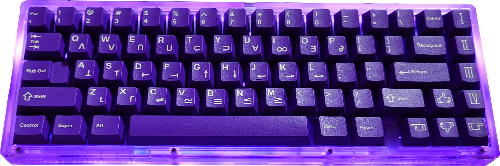
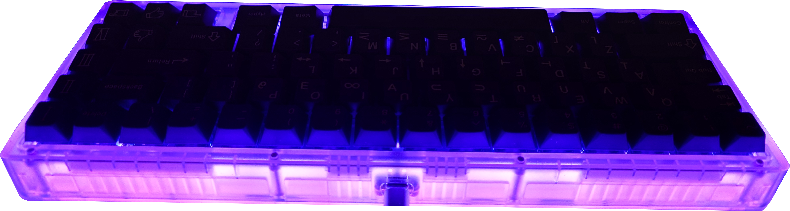
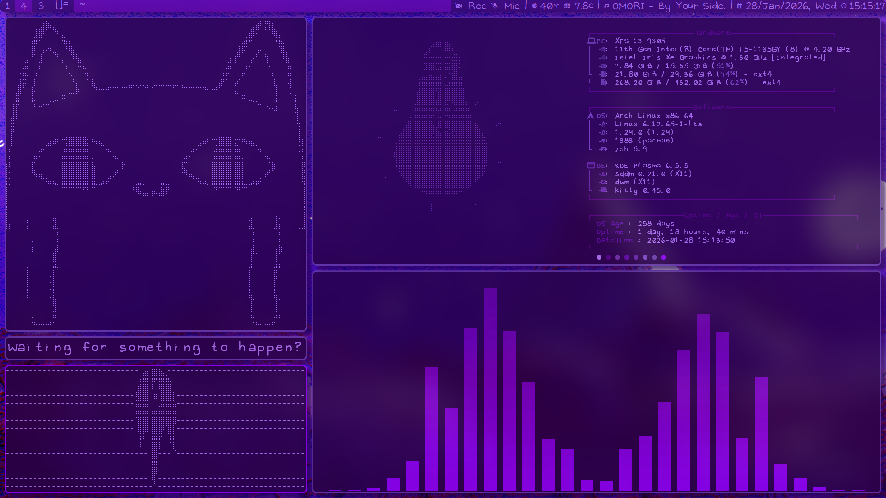

Hello! Welcome to this blog, located in a small part of a vast ocean called World Wide Web. I’m the blog’s owner, Liber. Now, you might be thinking: “what does this name even mean? Such a weird name SMH.” My name is based on the Latin word “
liber”, and one of its meaning is “free” (free in the sense of freedom). There’s also another thing that it’s based on, but that’s a secret.
Currently, I’m studying
Internet & Multimedia Technologies at
Hong Kong Polytechnic University. Sadly, the program has already been phrased out, so you might not be able to find a lot info about it. Still, I’ve learned a lot from my study, ranging from the technical stuff like: how a video or an audio works (=boring), to the more creative stuffs like: how to make animations or games (=fun). When I’m free, I usually play video games, watch live streams, or read online articles.
I like tinkering with stuffs to my liking during my free time. Here are some examples:

My Mechanical Keyboard (with lights on)

My Mechanical Keyboard (with lights off)
I built this mechanical keyboard 4 months ago, so all the parts: keycaps, switches, keyboard kit… were bought individually, and I had to put them together myself. If you can’t tell already, I really like purple!

Screenshot of My Computer (taken a while ago)
I also like to customize my computer. Right now, the computer’s UI and most apps’ UI were completely done by me (that’s why it’s fully purple). For most of the basic functions such as screen locking and screen recording, I wrote my own scripts for them to work properly, as I don’t like the current options out there. I also wrote most of the configs of the apps I use by myself, so they all fit my preferences.
I know doing all these might seem like a total waste of time to you. “Why do all this when you can just use others’ works? Are you stupid?” you might think,
but this is my hobby. I like figuring stuffs on my own, and it feels more rewarding to do stuffs by myself instead of using others’ works. It’s also more secure and private to write your own scripts, as you know what the scripts actually do. Unlike using others’ scripts, you have to trust the developers to not be malicious. If you care about security and privacy like me, I encourage you to do the same as me. Especially when it’s easier than ever to do now with the help of AI (even when I despise AI art, it’s useful for solving problems).
In this blog, not only will you find out more about me, you can also learn more about digital literacy in the form of a tutorial, a podcast, a review. It’s a topic that lot of us ignore, even when it’s important to our daily life. I hope you can enjoy your time here and get something out of it!